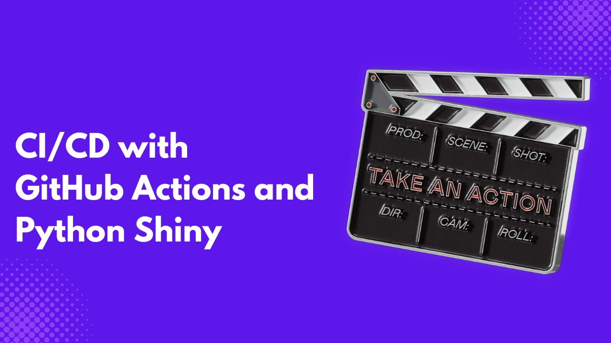
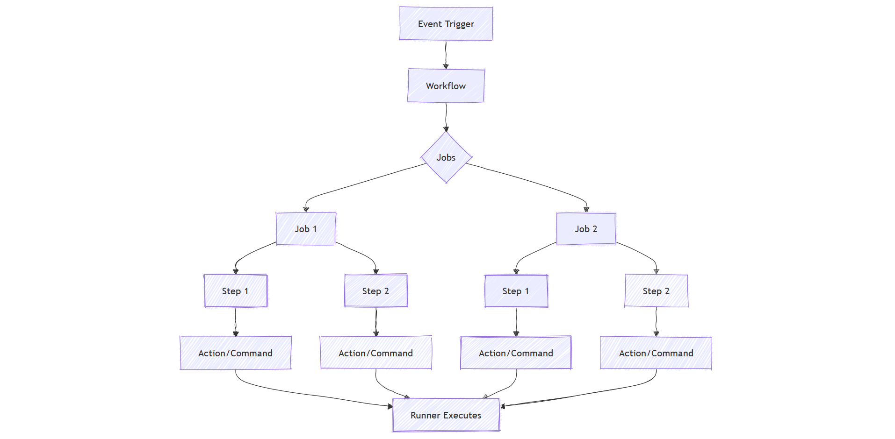

When working on a project with many collaborators, running tests before merging is essential to ensure that none of the application functionality is broken. This is handled by automating an application’s testing, building, and deployment process.
CI stands for continuous integration, which is the automation of an application’s testing and deployment process, while CD stands for continuous deployment, which is the automation of an application’s deployment.
GitHub Actions make it easy to implement CI/CD on applications, primarily if the application repository is hosted on GitHub. In a short period of time, you can set up a workflow that automates your test, build, and deployment process.
In this article, you will learn how to use GitHub Actions to create a workflow in your Python Shiny code repository that only merges pull requests from collaborators if tests pass, using Pytest for unit testing.
What are GitHub Actions?
Many CI/CD platforms exist, such as Jenkins, Circle CI, and so on. However, GitHub Actions is one of the easiest to work with since it integrates well with projects hosted on GitHub. GitHub Actions is a feature within GitHub that enables you to automate tasks within your software development lifecycle. By using GitHub Actions, you also benefit from GitHub security and code scanning features. GitHub Action uses YAML to create an automation workflow, with the option to run it on the GitHub cloud or your local server.
GitHub Actions is made up of the following core components:
- Workflow: A configurable automated process comprising one or more jobs. Workflows are defined in YAML files within your repository’s
.github/workflows/directory. - Event: A specific activity that triggers the workflow. Events can be GitHub events (like
push,pull_request), scheduled events (cron), or manual triggers. - Job: A set of steps that execute on the same runner. Jobs can run sequentially or in parallel and depend on other jobs.
- Step: An individual task within a job. Steps can run commands or use actions.
- Action: A reusable extension that can simplify your workflow by performing specific tasks such as checking out code, setting up languages, or deploying.
- Runner: A server that runs your workflows when they’re triggered. GitHub provides hosted runners, or you can host your own.

A Basic Python Shiny Application
Let’s build a simple Python Shiny application that lets users compute the total profit and revenue from supermarket sales data and implement some unit tests.
Step 1 - Install dependencies
Create a project folder, and copy and paste the following library names into a requirements.txt file.
shiny
pandas
pytest
pytest-covshinylibrary for building web applications.pandaslibrary for loading and wrangling data.pytestlibrary for unit testing.pytest-covlibrary for producingpytestcoverage reports.
Run the following code on your terminal to install the required libraries.
python3 pip install -r requirements.txtStep 2 - Setup utility functions
Create a new folder, utilis.py. This folder will contain the application’s business logic.
import pandas as pd
# Business Logic
def fetch_data():
data = pd.read_csv("supermarket_sales.csv")
return data
def total_profit(data):
profit = sum(data["gross income"])
return profit
def total_revenue(data):
revenue = sum(data["cogs"])
return revenue- The
fetch_data()function loads the dataset. - The
total_profit(data)calculates the total profit. - The
total_revenue(data)calculates the total revenue.
Step 3 - Create the application user interface
Create a simple user interface that will give users options regarding the type of aggregate they want from the sales data. Copy and paste the following into a file named main.py.
from shiny import reactive
from shiny.express import input, render, ui
from utilis import fetch_data, total_profit, total_revenue
with ui.card():
ui.h2("Sales Dashboard"),
ui.input_select(
"calculation", "Select calculation:", choices=["Total Profit", "Total Revenue"]
)
ui.input_action_button("compute", "Compute!")
with ui.card():
with ui.h1():
@render.text
@reactive.event(input.compute)
def result():
if input.calculation() == "Total Profit":
value = total_profit(fetch_data())
else:
value = total_revenue(fetch_data())
return valueStep 4 - Run the application
Run the application to ensure that it is working as expected.
shiny run --reload main.py
Step 5 - Add unit tests
Add the following unit tests into a file test_main.py
from utilis import fetch_data, total_profit, total_revenue
import pandas as pd
# Business Logic
data = fetch_data()
def test_total_profit():
assert total_profit(data) == 15379.369
def test_total_revenue():
assert total_revenue(data) == 307587.38test_total_profit()and test_total_revenue() check if the values on the Python Shiny application are equal to 1539.369 and 307587.38, respectively.
Run pytest on your terminal to ensure that the test passes.

Setting Up an Automation Workflow with GitHub Actions
Let’s set up an automation workflow that is triggered anytime a push is made. Before proceeding, ensure your project is hosted on GitHub.
Step 1 - Set up workflow directory
In your project directory, create a new folder, .github; in it, create another folder, workflows. Inside the workflows folder, create a file called run_test.yml. Copy and paste the following code into it.
name: Run Unit Test via Pytest
on: push
jobs:
build:
runs-on: ubuntu-latest
steps:
- uses: actions/checkout@v3
- name: Set up Python
uses: actions/setup-python@v4
with:
python-version: 3.12.1
- name: Install dependencies and lint
run: |
python -m pip install --upgrade pip
pip install -r requirements.txt
pip install ruff
ruff --format=github --target-version=py310 . || true
- name: Test with pytest
run: |
coverage run -m pytest -v -s
coverage report -mHere is a breakdown of the above YAML file.
name: Run Unit Test via Pytestis the label identifying what the workflow does.on: pushmeans the workflow will start automatically whenever new changes are pushed to the GitHub repository.jobscontain tasks or steps that the workflow will execute. You can specify various numbers of jobs, here we only have one job namedbuild.runs-on: ubuntu-latestmeans that the job should run on the latest version of Ubuntu, which is the environment in which the code is tested.uses: actions/checkout@v3, the first step, clones your code onto the virtual machine where the test will run.- The next step, which is
name: Set up Python, installs Python on the virtual machine, specifically version3.12.1, to ensure the code runs in the correct Python environment. - The next step
name: Install dependencies and lint, install the project dependencies, and check for linting.python -m pip install --upgrade pipupgrades pip.pip install -r requirements.txtinstalls the required libraries.pip install ruffinstalls Ruff, a tool that checks your code for potential errors and enforces linting.ruff --format=github --target-version=py310 . || trueruns Ruff to analyze your code. If Ruff detects an issue,||trueensures that the workflow continues running, allowing you to see listing results without stopping the testing process.
- The last step
name: Test with pytestruns the unit tests and checks how much code was covered by the tests.
Step 2 - Push to GitHub to run the workflow
Push your project to GitHub to run the workflow, then go to the Actions tab under the project repository. This will give you a list of all workflows with runners under that specific repository.

Go to the Actions tab to check running workflows. Image by Author.
A green check means the workflow run was successful, while a red cross means it failed. You can click on a specific workflow run and then click on build to get more details about the workflow.

Step 3 - Create a branch to make a merge request.
Let’s create a branch and break some code functionality to ensure the test fails. Create a new branch, change any numbers used in the test function of the test_main.py file, and push to GitHub under the new branch.

Click Create Pull request on GitHub to merge the branch into the main branch. The workflow will be executed, and an error message will show that the unit tests failed.

Now, return to the branch and fix it as before. If you make a pull request, you will see that all tests have been successfully passed.

Collaborators can still make merge requests even if the tests fail. You need to enforce a rule that prevents any pull request from merging if all tests have not been passed. Go to the GitHub settings and select branch. Under the branch section, give a name to the rule you are about to set and check the option Require status checks to pass.

Conclusion
There is more to GitHub actions than just automating the testing of pull requests. You can integrate GitHub Actions with various tools such as Mail, Slack, and Discord to get notifications on GitHub Actions events. Many of these tools are available on the GitHub Marketplace.
In his article, you learned how to set up a simple CI/CD workflow with GitHub Actions and Python Shiny. I hope this motivates you to build on this in your next project. Here are some valuable resources on testing and GitHub Actions.
How to Conduct Unit Tests in Python Shiny with Pytest
End-to-end Testing with Playwright and Python Shiny
GitHub Actions and MakeFile: A Hands-on Introduction
CI/CD in Data Engineering: A Guide for Seamless Deployment
How to use Github Actions for Data Science
How to Send Detailed Slack Notifications from GitHub Actions?
Need Help with Data? Let’s Make It Simple.
At LearnData.xyz, we’re here to help you solve tough data challenges and make sense of your numbers. Whether you need custom data science solutions or hands-on training to upskill your team, we’ve got your back.
📧 Shoot us an email at admin@learndata.xyz—let’s chat about how we can help you make smarter decisions with your data.